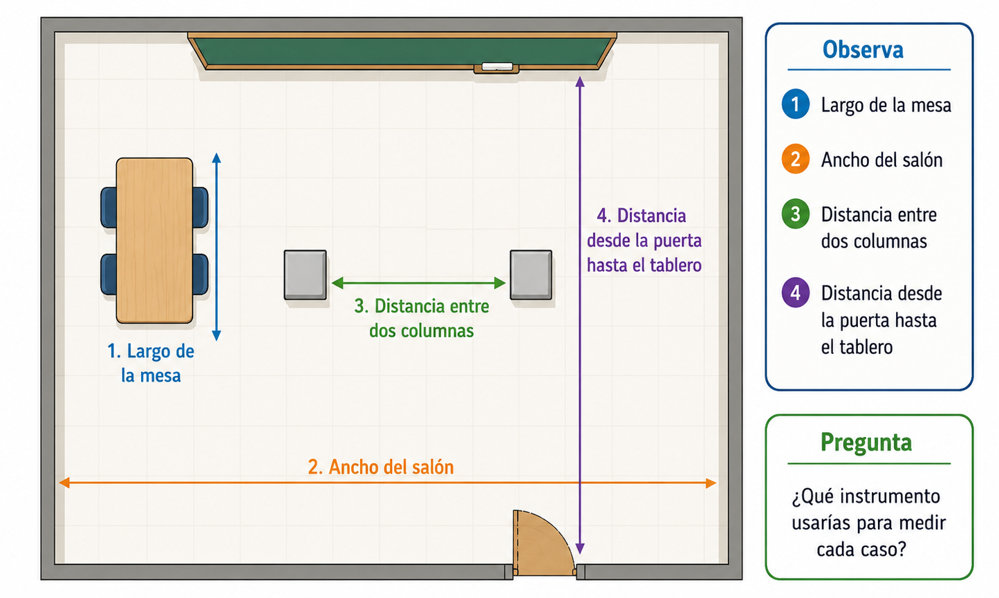
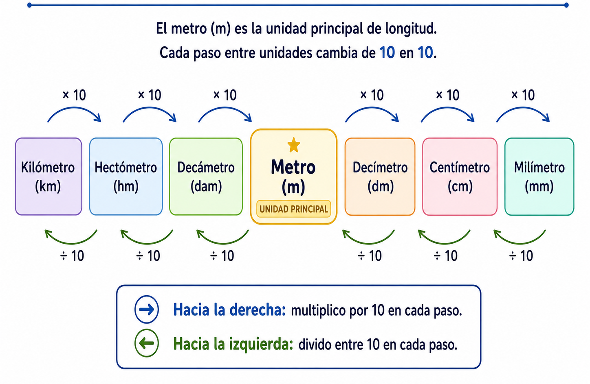

6°
-SITUACIÓN PROBLEMA CENTRAL
¿Cómo medir correctamente un espacio del colegio?
En el colegio se quiere organizar mejor el espacio de una zona común. Para hacerlo, un grupo de estudiantes debe medir algunos lugares: el largo de una mesa, el ancho del salón, la distancia entre dos columnas y el recorrido desde la puerta hasta el tablero.
El problema es que algunos estudiantes escribieron las medidas usando centímetros, otros usaron metros y otros solo dijeron frases como “es largo”, “es corto” o “más o menos mide igual”. Por eso, el grupo necesita aprender a usar unidades de longitud adecuadas, comparar medidas y expresar resultados de forma clara.

En esta guía aprenderás a reconocer unidades de longitud, elegir la unidad más conveniente para medir objetos o distancias y realizar conversiones sencillas entre algunas unidades.
En tu cuaderno escribe el título:
Guía de Aprendizaje N.° 1: Unidades de longitud
EXPLORACIÓN
Observa y compara
Observa la situación presentada sobre las mediciones en el colegio. Luego responde en tu cuaderno.
- ★ ¿Qué objetos o espacios del colegio se pueden medir usando una regla o una cinta métrica?
- ★ ¿Qué sería más fácil medir en centímetros: el largo de un lápiz o el largo del salón? Escribe tu respuesta y una razón.
- ¿Qué sería más fácil medir en metros: el ancho de una puerta o la distancia entre dos salones? Explica en una frase.
- Completa la frase: “Para medir objetos pequeños, me parece más conveniente usar __________”.
- Completa la frase: “Para medir distancias más grandes, me parece más conveniente usar __________”.
Estimación rápida
Sin usar todavía instrumentos de medición, estima las siguientes longitudes. Escribe una respuesta aproximada.
| Objeto o distancia | Estimación | Unidad que usarías |
|---|---|---|
| Largo de un lápiz | ||
| Alto de una silla | ||
| Ancho del salón |
No escribas definiciones todavía. En este momento solo observa, estima y compara.
ANALIZA
Medidas escritas de diferentes formas
Observa las siguientes medidas registradas por tres estudiantes:
| Estudiante | Objeto medido | Medida registrada |
|---|---|---|
| A | Largo de una mesa | 120 cm |
| B | Largo de una mesa | 1 m y 20 cm |
| C | Largo de una mesa | Es más o menos larga |
- ★ ¿Cuáles registros tienen números y unidades de medida?
- ★ ¿Cuál registro es menos preciso? Escribe la letra del estudiante y una razón.
- ¿Los estudiantes A y B podrían estar hablando de la misma longitud? Responde sí o no y explica con una frase.
- Completa: “Para comparar medidas con seguridad, necesito conocer el número y la __________”.
Comparación guiada
Observa estas dos medidas:
100 cm y 1 m
- ★ ¿Tienen el mismo número escrito? Sí / No.
- ★ ¿Tienen la misma unidad escrita? Sí / No.
- ¿Crees que podrían representar la misma longitud? Sí / No.
- Antes de resolver con seguridad, ¿qué información haría falta conocer sobre centímetros y metros?
Aún no escribas reglas formales. Primero observa cómo se relacionan las unidades.
CONOCE ALGO NUEVO
¿Qué es la longitud?
La longitud es la medida de una distancia. Puede indicar el largo, el ancho, la altura o la separación entre dos puntos.
Por ejemplo, se puede medir la longitud de un lápiz, el alto de una puerta, el ancho del salón o la distancia entre dos lugares.
Completa en tu cuaderno:
La longitud permite medir el __________, el __________, la __________ o la distancia entre dos puntos.
Unidades de longitud
Para expresar una longitud se necesita un número y una unidad de medida. La unidad indica con qué patrón se está midiendo.
Algunas unidades de longitud son:
| Unidad | Símbolo | Uso común |
|---|---|---|
| Milímetro | mm | Longitudes muy pequeñas |
| Centímetro | cm | Objetos pequeños o medianos |
| Metro | m | Objetos grandes o espacios cercanos |
| Kilómetro | km | Distancias largas |
Completa en tu cuaderno:
- Para medir el largo de un borrador usaría __________.
- Para medir el ancho del salón usaría __________.
- Para medir la distancia entre dos barrios usaría __________.
El metro como unidad principal
En el sistema métrico decimal, el metro es una unidad principal para medir longitudes. A partir del metro se relacionan otras unidades más pequeñas y más grandes.

Algunas equivalencias importantes son:
- 1 km = 10 hm
- 1 hm = 10 dam
- 1 dam = 10 m
- 1 m = 10 dm
- 1 dm = 10 cm
- 1 cm = 10 mm
También podemos expresar algunas equivalencias más amplias:
- 1 m = 100 cm
- 1 m = 1000 mm
- 1 km = 1000 m
- 100 cm = 1 m
- 1000 m = 1 km
Idea clave:
- Cada vez que avanzamos una posición hacia una unidad menor, multiplicamos por 10.
- Cada vez que avanzamos una posición hacia una unidad mayor, dividimos entre 10.
Mini-verificación en el cuaderno:
- Si 1 m equivale a 100 cm, entonces 2 m equivalen a __________ cm.
- Si 1 cm equivale a 10 mm, entonces 3 cm equivalen a __________ mm.
- Si 1 km equivale a 1000 m, entonces 2 km equivalen a __________ m.
Conversión sencilla de metros a centímetros
Convertir una medida significa expresarla en otra unidad equivalente. Si pasamos de metros a centímetros, multiplicamos por 100, porque cada metro tiene 100 centímetros.
Ejemplo paso a paso:
Convertir 3 m a centímetros.
- Identifico la equivalencia: 1 m = 100 cm.
- Como tengo 3 m, calculo: 3 x 100 = 300.
- Escribo la respuesta con unidad: 3 m = 300 cm.
Ahora completa el procedimiento:
Convertir 5 m a centímetros.
- Equivalencia: 1 m = __________ cm.
- Cálculo: 5 x __________ = __________.
- Respuesta: 5 m = __________ cm.
Conversión sencilla de centímetros a metros
Si pasamos de centímetros a metros, dividimos entre 100, porque 100 centímetros forman 1 metro.
Ejemplo paso a paso:
Convertir 400 cm a metros.
- Identifico la equivalencia: 100 cm = 1 m.
- Como tengo 400 cm, calculo: 400 ÷ 100 = 4.
- Escribo la respuesta con unidad: 400 cm = 4 m.
Ahora completa el procedimiento:
Convertir 700 cm a metros.
- Equivalencia: 100 cm = __________ m.
- Cálculo: 700 ÷ __________ = __________.
- Respuesta: 700 cm = __________ m.
Elegir la unidad adecuada
No siempre conviene usar la misma unidad. La unidad adecuada depende del tamaño del objeto o de la distancia que se va a medir.
| Situación | Unidad más conveniente | Razón |
|---|---|---|
| Medir el grosor de una moneda | Milímetros | Es una longitud muy pequeña |
| Medir el largo de un cuaderno | Centímetros | Es un objeto pequeño o mediano |
| Medir el ancho del salón | Metros | Es un espacio grande |
| Medir la distancia entre dos municipios | Kilómetros | Es una distancia larga |
Completa en tu cuaderno:
- Para medir el alto de una puerta usaría __________ porque __________.
- Para medir el largo de una hormiga usaría __________ porque __________.
- Para medir la distancia desde el colegio hasta otro barrio usaría __________ porque __________.
Error común que debes evitar
Un error frecuente es escribir solo el número y olvidar la unidad. No es lo mismo escribir 30 que escribir 30 cm. El número indica cuánto mide, pero la unidad indica con qué se midió.
Corrige estas respuestas:
- El lápiz mide 18. Respuesta corregida: El lápiz mide 18 __________.
- La puerta mide 2. Respuesta corregida: La puerta mide 2 __________.
- La distancia entre dos ciudades es 80. Respuesta corregida: La distancia entre dos ciudades es 80 __________.
Idea clave
Para medir longitudes correctamente, debes identificar qué se mide, elegir una unidad adecuada, escribir el número con su unidad y convertir cuando sea necesario comparar medidas expresadas de forma diferente.
Completa la frase final:
Una medida de longitud está completa cuando tiene __________ y __________.
ACTIVIDADES DE APRENDIZAJE
Ruta de trabajo
Resuelve las actividades en tu cuaderno. Lee cada instrucción con atención y escribe siempre el número acompañado de la unidad de medida.
Los ejercicios marcados con ★ son obligatorios. Si el tiempo de clase no alcanza, desarrolla primero esos ejercicios.
Nivel esencial
En tu cuaderno escribe:
Actividades – Unidades de longitud
1. Reconozco la unidad adecuada
Primero identifica el objeto o distancia. Luego escribe la unidad más conveniente: mm, cm, m o km.
| Situación | Unidad más conveniente | Razón breve |
|---|---|---|
| ★ Medir el largo de un lápiz | ||
| ★ Medir el ancho del salón | ||
| ★ Medir el grosor de una moneda | ||
| Medir la distancia entre dos municipios |
Frase de apoyo para responder: “Usaría __________ porque es una longitud __________”.
2. Completo equivalencias básicas
Recuerda: cada paso hacia una unidad menor multiplica por 10. Cada paso hacia una unidad mayor divide entre 10.
- ★ 1 m = __________ dm
- ★ 1 dm = __________ cm
- ★ 1 cm = __________ mm
- ★ 1 dam = __________ m
- 1 hm = __________ dam
- 1 km = __________ hm
3. Convierto de una unidad mayor a una menor
Para convertir hacia una unidad menor, multiplica por 10 en cada paso. Observa el ejemplo:
Ejemplo: 4 m a cm.
- De m a dm hay un paso: 4 × 10 = 40 dm.
- De dm a cm hay otro paso: 40 × 10 = 400 cm.
- Respuesta: 4 m = 400 cm.
Ahora resuelve:
- ★ 2 m = __________ cm. Primer paso: 2 m = __________ dm.
- ★ 5 cm = __________ mm. Primer paso: 5 × 10 = __________.
- ★ 3 dam = __________ m. Primer paso: 3 × 10 = __________.
- 6 m = __________ mm. Recuerda que de m a mm hay tres pasos.
4. Convierto de una unidad menor a una mayor
Para convertir hacia una unidad mayor, divide entre 10 en cada paso. Observa el ejemplo:
Ejemplo: 300 cm a m.
- De cm a dm hay un paso: 300 ÷ 10 = 30 dm.
- De dm a m hay otro paso: 30 ÷ 10 = 3 m.
- Respuesta: 300 cm = 3 m.
Ahora resuelve:
- ★ 100 cm = __________ m. Primer paso: 100 cm = __________ dm.
- ★ 70 mm = __________ cm. Primer paso: 70 ÷ 10 = __________.
- ★ 50 m = __________ dam. Primer paso: 50 ÷ 10 = __________.
- 4000 m = __________ km. Recuerda que de m a km hay tres pasos.
Nivel intermedio
5. Comparo medidas escritas en unidades diferentes
Antes de comparar, convierte las medidas a la misma unidad. Luego escribe cuál es mayor.
- ★ Compara 2 m y 150 cm. Primero convierte 2 m a cm: 2 m = __________ cm. La medida mayor es __________.
- Compara 300 cm y 4 m. Primero convierte 4 m a cm: 4 m = __________ cm. La medida mayor es __________.
- Compara 5 km y 4500 m. Primero convierte 5 km a m: 5 km = __________ m. La medida mayor es __________.
6. Aplico lo aprendido en el aula
Observa nuevamente la situación problema del salón. Responde con una unidad adecuada y una razón breve.
- ¿Qué unidad usarías para medir el largo de una mesa del salón? Explica en una frase.
- ¿Qué unidad usarías para medir el ancho del salón? Explica en una frase.
- ¿Qué unidad usarías para medir la distancia desde la puerta hasta el tablero? Explica en una frase.
- ¿Sería conveniente medir el ancho del salón en milímetros? Sí / No. Explica usando la frase: “No sería conveniente porque…”
Nivel de profundización
7. Analizo un error común
Un estudiante escribió:
3 m = 30 cm
- ¿La conversión es correcta? Sí / No.
- ¿Qué error cometió el estudiante?
- Escribe la conversión correcta.
- Completa: “El error fue olvidar que de metros a centímetros hay __________ pasos y cada paso multiplica por __________”.
8. Reto para quienes terminan antes
Inventa una situación del colegio donde sea necesario medir una longitud. Luego responde:
- ¿Qué objeto o distancia se va a medir?
- ¿Qué unidad usarías?
- ¿Por qué esa unidad es conveniente?
- Escribe una medida posible y conviértela a otra unidad.
Ejemplo de respuesta: “El largo de una mesa mide aproximadamente 120 cm, que equivale a 1 m y 20 cm”.
EVALUACIÓN FORMATIVA INTERACTIVA DE REPASO
Instrucciones
Marca una opción en cada pregunta. Al seleccionar tu respuesta, aparecerá la retroalimentación de inmediato. Cada pregunta permite un solo intento, por eso después de marcar una opción no podrás cambiarla.
Esta actividad no reemplaza la evaluación del periodo. Su propósito es ayudarte a repasar, reconocer errores y fortalecer lo aprendido sobre unidades de longitud.
Pregunta 1. Unidad adecuada
Para medir el grosor de una moneda, la unidad más conveniente sería:
Pregunta 2. Equivalencia entre unidades consecutivas
Completa correctamente:
1 m = ______ dm
Pregunta 3. Conversión hacia una unidad menor
Convierte:
3 m = ______ cm
Pregunta 4. Conversión hacia una unidad mayor
Convierte:
500 cm = ______ m
Pregunta 5. Comparación de medidas
¿Cuál medida es mayor?
Pregunta 6. Análisis de error
Un estudiante escribió:
4 m = 40 cm
¿Cuál fue el error?
CIERRE REFLEXIVO
Responde en tu cuaderno:
¿Qué error debes evitar cuando conviertes medidas de longitud y qué estrategia te puede ayudar a corregirlo?
Escribe tu respuesta usando esta estructura:
“Debo evitar __________. Para corregirlo, puedo __________”.
REFERENCIAS
Elaboración propia del docente, con base en los estándares del Ministerio de Educación Nacional de Colombia, los Derechos Básicos de Aprendizaje de Matemáticas y el plan de área institucional de Geometría 6°.
Ministerio de Educación Nacional. (2006). Estándares Básicos de Competencias en Matemáticas. Bogotá, Colombia: MEN.
Ministerio de Educación Nacional. (2016). Derechos Básicos de Aprendizaje de Matemáticas. Grado 6°. Bogotá, Colombia: MEN.
Ministerio de Educación Nacional. (2017). Vamos a aprender Matemáticas 6. Bogotá, Colombia: MEN.